Operational Problem
Instantaneous versus delayed passenger-driver matching.
Transportation Research Part C · 2021
A queueing-theory interpretation of delayed matching controlled by reinforcement learning
Presented by
Presentation roadmap
Instantaneous versus delayed passenger-driver matching.
Double-ended queues, state transitions, patience, and waiting costs.
Spatial grids, Hold/Match decisions, and bipartite assignment.
POMDP, Actor-Critic, ACER, network flow, and reward design.
Shanghai data, experiments, training curves, and wait-time results.
Generalization, learned grid policy, limitations, and conclusions.
Practical decision
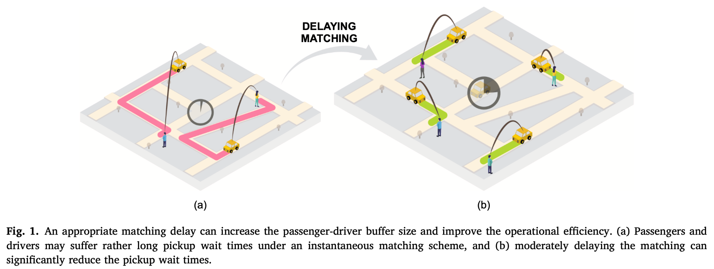
Passengers are assigned immediately, but the available driver may be far away.
More passenger-driver combinations can reduce pickup distance and pickup waiting time.
Paper Fig. 1.
Research objective
The decision is taken repeatedly and can differ across spatial grids.
Decomposes delayed waiting costs into informative step-wise signals.
Balances representation detail against the action-space burden of asynchronous matching.
Identifies when controlled delay is useful and when instantaneous matching dominates.
Literature review and gap
Provide interpretable optimality results under stationary arrivals, parametric behavior, or simplified abandonment rules.
Capture intertemporal effects, but exact dynamic programs become intractable in large spatial systems.
Learns from sampled transitions, yet must cope with high-dimensional state, delayed rewards, and correlated experience.
Queueing characterization
Trip requests join a waiting buffer.
Unmatched passengers and idle drivers accumulate and carry over.
Each grid either retains the queue or releases it to global assignment.
Matched drivers become occupied; unmatched drivers remain idle.
Deque approximation
Passengers and idle drivers arrive with stationary rates \(\lambda_P\) and \(\lambda_D\).
Arrivals are uniformly distributed in a square area of size \(d\times d\).
Bipartite matching is executed at \(t\in\{\Delta t,2\Delta t,3\Delta t,\ldots\}\).
Unmatched passengers and drivers return to the buffer for later intervals.
Participants may balk or renege when expected waiting exceeds \(t_{\max}\).
Pickup time equals Manhattan distance divided by average speed \(v\).
Queue-state evolution
No pair is removed; both sides remain available for a later matching epoch.
New arrivals are added first; successful matches then leave both queues.
Connection to course material
Central analytical result
The opposing slopes create a U-shaped total-wait curve and an optimal matching interval.
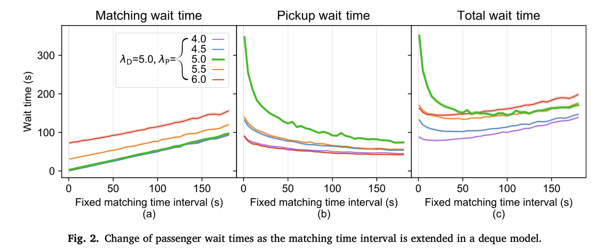
Paper Fig. 2.
Stationary policy surface
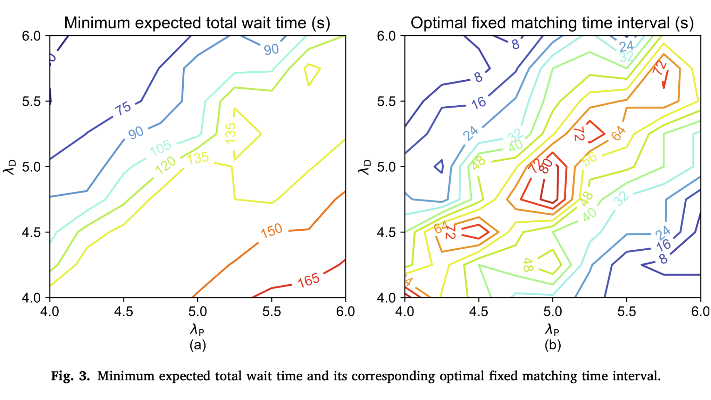
The optimal \(\Delta t\) becomes longer because a thicker pool can improve pair quality.
Additional delay adds waiting without producing enough useful alternatives.
Paper Fig. 3.
Learning environment
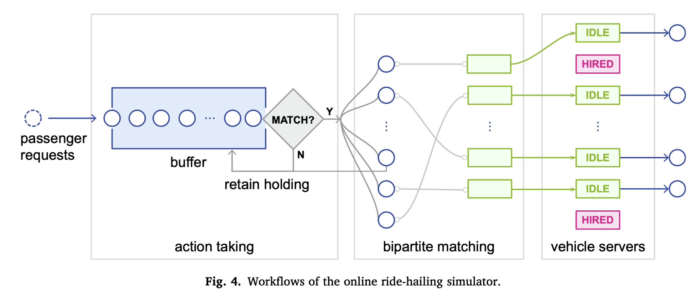
New and unmatched requests remain queued.
Hold preserves the batch; Match sends participants to assignment.
Matched requests enter vehicle servers; unmatched requests circulate back.
Paper Fig. 4.
Spatially dependent control
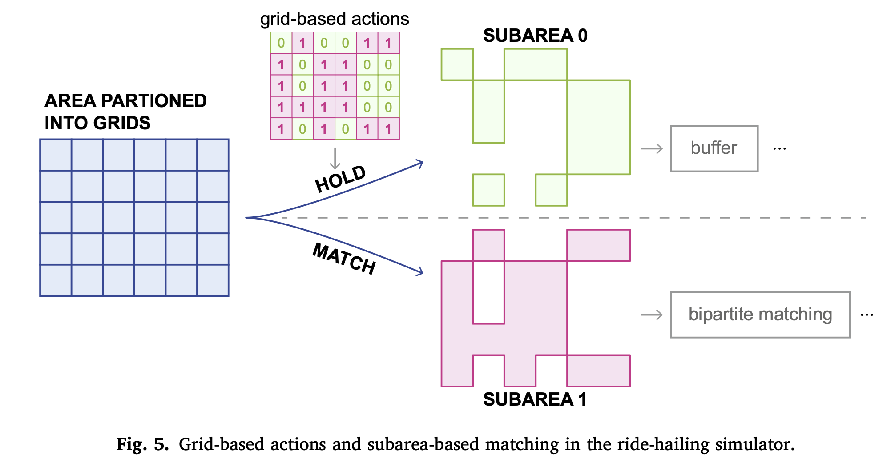
All grids with action \(1\) form subarea \(S_1\) and participate in a global match. Grids with action \(0\) remain in \(S_0\).
Paper Fig. 5.
Global matching stage
\(T_{ij}\) is the pickup time from driver \(i\) to passenger \(j\), estimated from Manhattan distance and speed \(v\).
The cost matrix is padded to \(n=\max(N_D,N_P)\) using a large value \(M\).
Unmatched passengers and drivers return to the buffer and influence the next state.
RL decides when and where; optimization decides who matches with whom.
Sequential decision model
The complete state would also contain exact request details, driver locations, timestamps, and future demand information.
Learning mechanisms
Adjust \(\pi_\theta(a\mid s)\) in the direction of higher expected return.
Uses sampled future return \(G(t)\) to update the policy, with high variance.
The Actor selects actions; the Critic estimates long-run value and enables bootstrapping.
Reuses experience to improve sample efficiency and stabilize training.
Conceptual architecture
Implementation adaptations
A one-dimensional action ID is mapped to a multi-binary Hold/Match matrix with up to \(2^{|S|}\) schemes.
Previously sampled transitions are reused, increasing sample efficiency and reducing step-wise correlation.
Episode time limits are not treated as true terminal states, preventing biased value updates.
Reward-design challenge
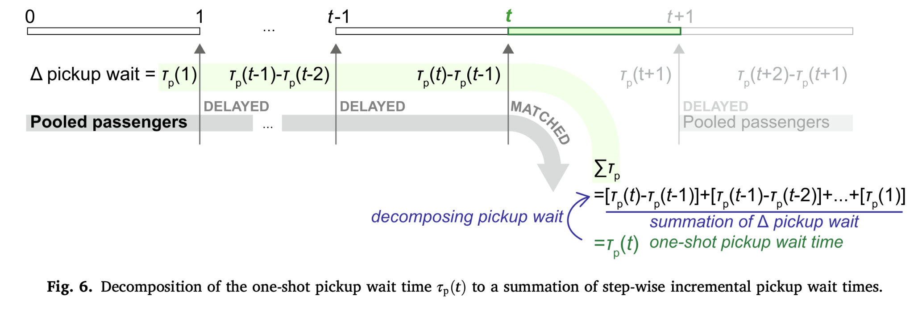
When the action is Hold, the immediate reward can remain zero while matching produces a negative waiting cost.
The agent struggles to connect a long sequence of Hold actions to a distant eventual cost.
Spread matching and pickup waiting penalties across the passenger's queueing lifetime.
Paper Fig. 6.
Queue-aware objective
\(R_m\) penalizes every extra step spent waiting for a match. \(R_p\) credits or penalizes the change in expected pickup cost caused by holding or matching.
Real-world data
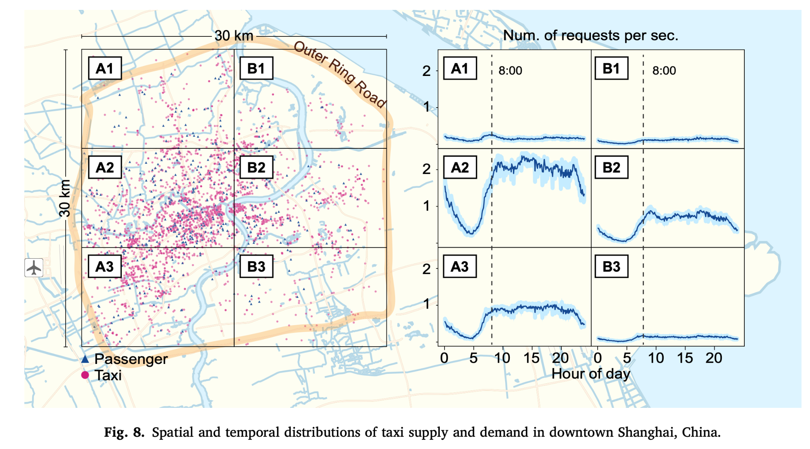
One week of trip, trajectory, and operational-status records.
Taxi ID, time, location, speed, bearing, and occupied/idle status.
The area inside the Outer Ring Road captures more than \(80\%\) of trips.
Six-grid control balances spatial detail and action dimensionality.
Paper Fig. 8.
Training protocol
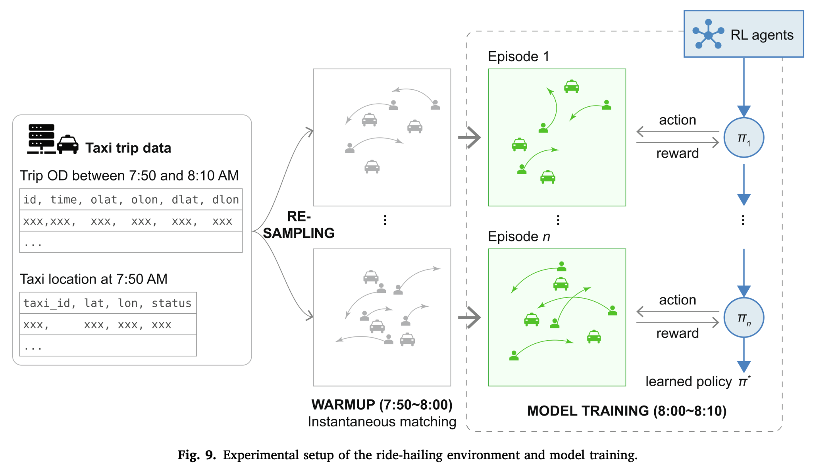
Paper Fig. 9.
Empirical queue behavior
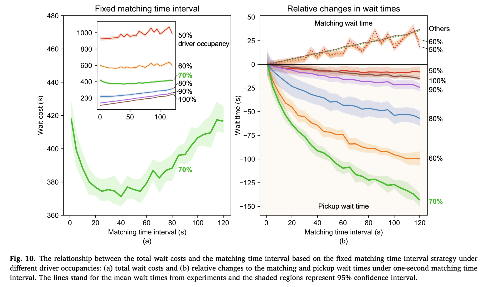
Total wait cost is U-shaped: pickup savings initially exceed the added matching delay.
Total wait generally rises with the interval; instantaneous matching is preferred.
Paper Fig. 10.
Algorithm comparison
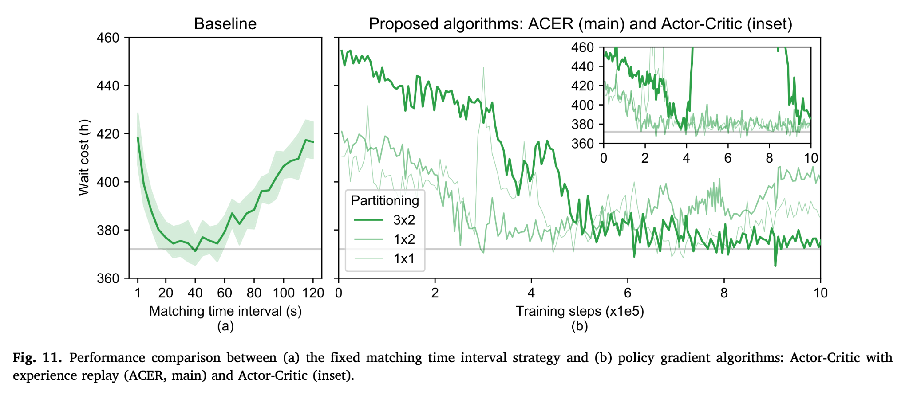
The best historical fixed interval yields a total wait cost near \(371.20\) hours.
Converged performance is comparable to the fixed baseline.
Only the \(1\times2\) case converges, at roughly \(380\) hours.
Paper Fig. 11.
Performance table
| Strategy | Matching wait | Pickup wait | Total wait |
|---|---|---|---|
| Instantaneous | \(3.01\,\mathrm{s}\) | \(675.71\,\mathrm{s}\) | \(678.72\,\mathrm{s}\) |
| Optimal fixed interval | \(21.20\,\mathrm{s}\) | \(525.69\,\mathrm{s}\) | \(546.89\,\mathrm{s}\) |
| ACER \((3\times2)\) | \(26.95\,\mathrm{s}\) | \(513.22\,\mathrm{s}\) | \(540.17\,\mathrm{s}\) |
ACER waits longer before assignment.
A thicker pool produces much closer matches.
The pickup saving dominates the matching delay.
ACER achieves the lowest reported mean total wait in Table 1 and performs on par with the historically optimized fixed baseline.
Across times and days
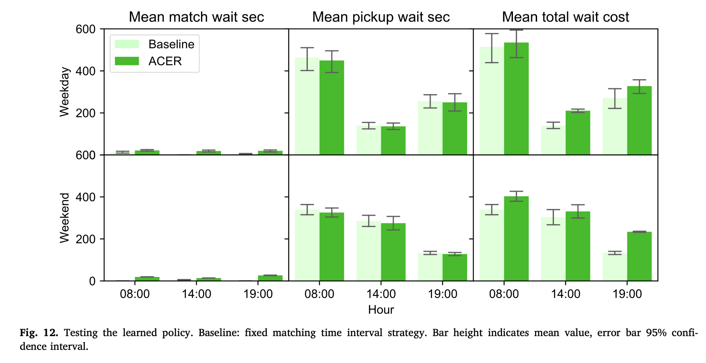
ACER stays close to the fixed baseline in total waiting cost.
The learned delayed policy is less suitable because near-instantaneous matching is already preferable.
Paper Fig. 12.
Episodic policy interpretation
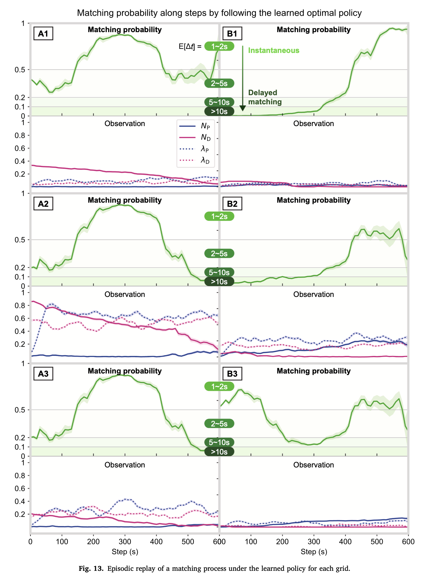
Selected when \(N_D\gg N_P\) or \(N_P\gg N_D\), especially when arrival rates are low or stable.
Selected when \(N_D\approx N_P\) and \(\lambda_P,\lambda_D\) are sufficiently high to create valuable alternatives.
Different grids follow different time-varying probabilities because queue populations and arrival rates evolve differently.
Paper Fig. 13.
Model limitations
A fixed patience threshold is used rather than heterogeneous behavior.
Idle drivers remain in their current grids instead of repositioning.
Drivers are assumed to remain active and do not leave the system.
The model excludes ride-pooling and the associated matching-queue structure.
The policy learns in a simulator rather than through live platform interaction.
Exact network layer sizes and activations are not specified in the paper.
Future directions
Quantify when the supply-demand state justifies delayed matching.
Switch between instantaneous and delayed matching using occupancy and passenger utility.
Model driver repositioning, departures, heterogeneous patience, and ride-pooling.
Learn from real-time dynamics while managing stochasticity, instability, and weak convergence guarantees.
Conclusion
Balanced and active supply-demand states create the strongest opportunity for delayed matching.
RL adapts the matching epoch across space and time while assignment optimization handles pair selection.
ACER with \(3\times2\) grids reduces mean total wait by \(20.41\%\) versus instantaneous matching.
Match immediately
Use controlled delay
Queueing Theory · Ride-Hailing Matching